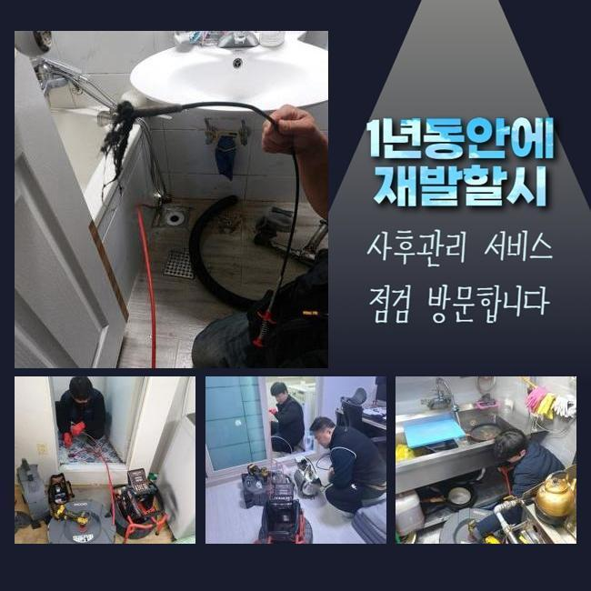
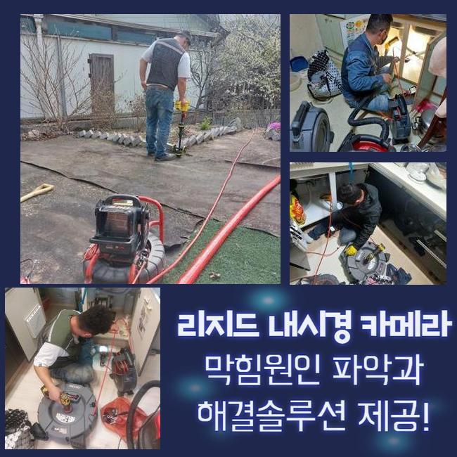
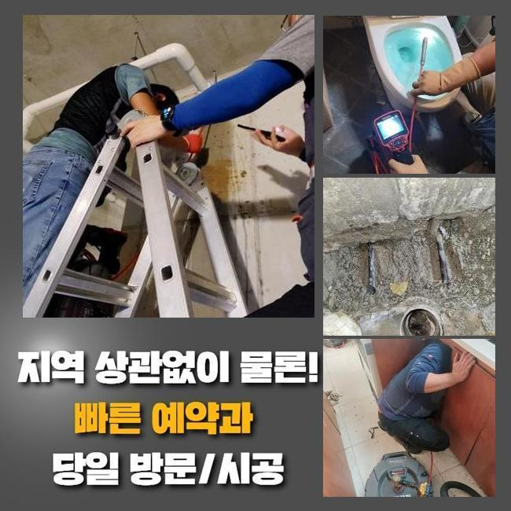
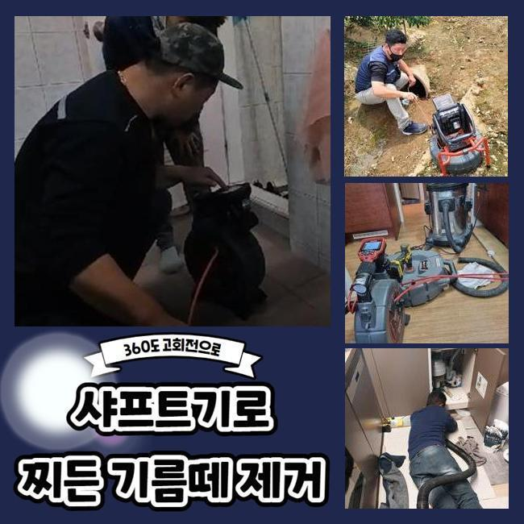
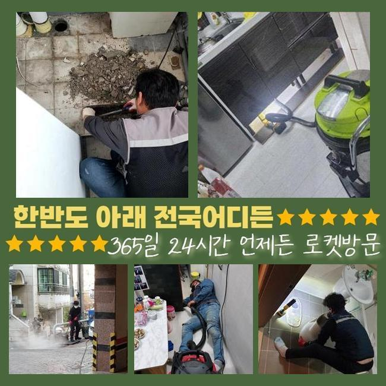
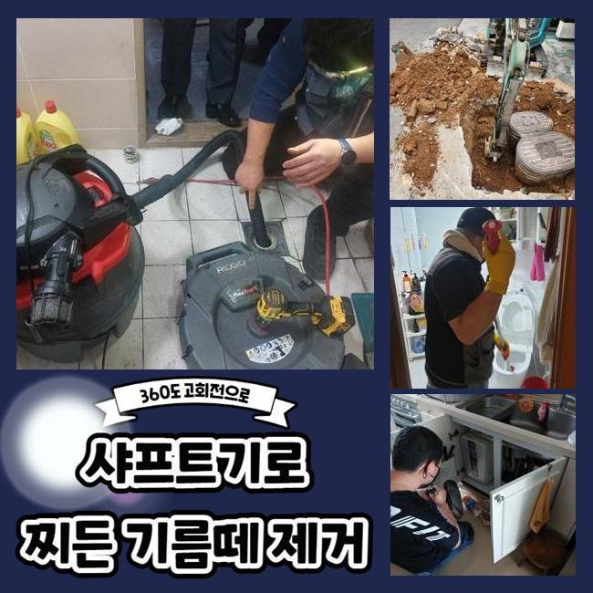
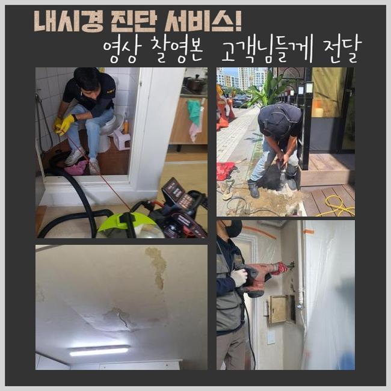

🏠 삼동화장실하수구막힘 월암동 냄새차단 출장수리
용인 하수구막힘 전문 시공 후기

📋 작업 개요
- 위치: 용인
- 서비스 유형: 하수구막힘, 배관막힘, 누수수리, 뚫는업체, 배관청소, 고압세척, 설비공사, 악취차단
- 작업 일시: 2025. 1. 8. 14:49
- 업체명: 하수구수사대 (010-5615-2118)
🔍 문제 상황
삼동화장실하수구막힘 월암동 냄새차단 출장수리
하수구가 멈춰버리게 되는 원인은 여러가지가 있지만 끈적끈적한 슬러지들과 석회가 주요 이물질이라 지정할 수 있습니다
하수구 공사를 하고서 하수의 중단이나 역행이 일어나면 시멘트 혹은 석조 등을 원인으로 추정하는 것이 유력할 수 있습니다
오늘의 작업장에서도 시공을 하면서 여러가지 막힘 원인들을 내부에서 관찰할 수 있었습니다
일반 주택에서 하수 고장이 발생하고 시간이 지나면 아랫집로의 물샘 사고가 번질 수 있는 부분이니 조속히 통수를 막는 대상을 없애야합니다
상가 내부의 하수관이라면 생계를 위협하는 사안이므로 더욱 신속 깔끔한 조치를 취해야 합니다
이번 케이스의 특이점은 사전에 시공을 받았던 리모델링을 받고나서부터 하수구가 이상해져서 고충이 어마어마하셨다고 말씀주셨어요
보통 인테리어시공이 있은 후부터 작업하고 남은 잔해를 남기지 않고 제거하지 않거나 수로로 폐기를 하면 치명적인 막힘을 만듭니다
여러가지 원인들로 오류가 발생하니 확신을 가지지 않고 뚫는 장비를 챙겨서 고객님이 계신 건물로 갔습니다
고객님과 인사를 드리고 상황의 이모저모를 봤더니 수전이 연결된 배수구의 문제가 나타난 것 같았습니다
흡입을 하는 석션으로 근처의 정화작업부터 시행하고서 파이프 안의 하수 싹 빨아당겨주었습니다
이미 고착화가 된 상태라 석션장치의 힘만으로는 역부족인 부분이었지만 후속 조치를 하기 위해서는 내부관측을 방해하는 더러운 오염수를 삭제하는 게 먼저였습니다

🔎 원인 분석
💡 전문가 진단: 정밀 진단 장비를 사용하여 슬러지의 고착 여부를 판명하고 타격/세척 작업을 실시했습니다.
하수구를 뚫어내기 위해서는 여러 차원의 장치들이 들어가야 완수할 수 있습니다
이물질을 빨아당기는 원리의 석션과 갈아내는 샤프트는 필수이며 보기 힘든 배관 속을 또렷하게 체크하려면 내시경도 작동시켜야 하는 부분입니다
배관 통로가 크거나 하부에 자리하고 있다면 강력한 파워를 지닌 고압세척기까지 작동시킬 수 있다보니 늘 이것도 꼭 챙기고 있습니다
요즘은 수작업뿐 아니라 장비의 힘이 점점 뛰어나게 변하니 하수구 청소 작업이 시간적으로 단축됩니다
작업과 관련된 노하우가 불충분하다면 효율적으로 장치를 돌리기 어렵습니다
무엇이 잘못됐나 추적하지 않고서 장치를 막 넣어버리면 하수구의 균열 및 누수까지 도래할 수 있다보니 배관 카메라를 써서 하수구 안의 탐방을 끝낸 후 이어지는 본격적인 작업을 시행하는 게 필요합니다
혼탁한 물기를 없애주고 하수구 촬영 기기를 배관 안으로 배치해서 상황 분석을 해보았습니다
이리저리 자리를 옮겨가며 확인해보니 자잘한 찌꺼기들과 깨진 유리같은 것들이 빈틈없이 자리하여 정상적인 물의 이동성을 저해한다는 걸 인식할 수 있었어요
인테리어를 맡기시거나 시공을 했다면 관로로 일부분이 유실되지 않게 자주 쓸어주면서 정돈작업을 해주는 게 필요합니다
심층부에 이르러서 돌덩이같은 게 나왔는데 인테리어 공사 중의 백시멘트가 흘러간 후 뭉쳐서 응고가 된 것을 추측해 볼 수 있었습니다
아무래도 공사하고 남은 백시멘트를 방출한 듯 했습니다
이물질이 켜켜이 쌓여있는 내부였기에 막혀버린 현장이었습니다

🔧 작업 과정
스크린을 통해서 현황을 봐주면서 분쇄를 담당해서 다치지 않게 해주었어요
샤프트기기를 활용하여 슬러지를 자잘하게 잘라서 꺼내보려고 시도했습니다
작은 파편들을 석션기로 끌어올렸더니 제법 큰 덩어리가 밖으로 방출됐습니다
반복적으로 제거작업을 임했건만 말라붙은 시멘트가 강직도가 높다보니 파이프를 새걸로 바꾸는 일까지 할 수도 있는 상황으로 몸소 느끼게 됐습니다
플렉스샤프트만 적용해서는 속 시원한 해소가 안 될 듯 하여 계속 무리하게 일을 이어가면 배관이 아예 부러져버릴까 걱정됐습니다
바닥 쪽 타일을 걷어내서 육안으로 관로를 보고서 계획을 짜보기로 했습니다
반드시 철거가 필요한 상황을 이야기 드리고 굴착을 했습니다
아니나 다를까 안에 백시멘트가 들어차서 배관 안이 차단된 게 맞더라고요
인테리어 절차를 거치면서 쓸려간 시멘트 분진이 쌓이고 쌓여 문제가 된 겁니다
흔히 사용하는 백시멘트는 쉽게 굳어버려서 가운데를 막아버리는 상황들이 막힘 작업지에 가보면 단골로 등장하는 막힘 원인입니다
잘라준 파트를 하자없는 파이프로 교환해 주었습니다
관로를 교체할 때에도 단차가 없이 일정하게 분리해줘야 하며 이어지는 부위에도 갭이 형성되지 않게 촘촘히 연결합니다
연결부를 이격이 일절 없도록 끝마치지 않는다면 시간이 가면서 틈이 벌어지고 결국 떨어져나가면서 누수로 업그레이드 될 때가 있어요
이어준 배관이 움직이거나 분해되지 않도록 신경 써서 하수구 연결업무를 했습니다
갈아내준 찌꺼기 입자들이 엄청난 양이 나왔습니다
눈이 휘둥그레 해질만한 양이 내측에 고이고 또 고여있었으니 통수가 이뤄질리가 없었습니다
물이 잘 내려가는가 단숨에 대량의 물을 아래로 폐기하여 경과를 보는 통수 테스트를 실시했는데요
속의 하수가 치솟는 결함들이 눈 씻듯 사라진 것을 체크하고서 미장 작업에 착수했습니다
시멘트를 빠진 곳 없이 넣어 배관을 밀착시키고 단차가 발생하지 않게 시공의 완성도를 높여드립니다


✅ 작업 완료
여기다 백시멘트를 이용해서 방수 작업을 거친 후에 철거해줬던 타일 마감재를 틀림없이 부착합니다
만일 하수구를 고친 다음에 철거했던 바닥부에 방수기능은 넣어주지 못하면 아랫집으로 물샘이 악영향을 줄 수 있으니 작업 후의 복원단계도 신경써서 체크해드리고 있습니다
견고하게 양생되기까지 내일까지는 공간 사용을 피하시라고 말씀드리고 어려움을 겪던 하수구 시공을 성공할 수 있었어요!
하수관이 마비되는 상황은 종잡을 수 없게 다양하지만 욕실 배수구 쪽의 문제도 심심치않게 발생해서 의뢰를 많은 분들이 해주십니다
전문 기술과 장치를 마련해두고 있으니 접수를 해주시면 차단되어 미진한 하수구 통수를 싹 뚫어드릴게요!




⚠️ 베란다 누수 및 방수 관리 방법
- ✅ 비가 많이 올 때 창틀 주변이나 아래층 천장에 얼룩이 생기는지 정기적으로 확인해 보세요.
- ✅ 우수관 주변 실리콘 마감이 들뜨거나 깨진 틈새가 있는지 손상 여부를 수시로 체크하세요.
- ✅ 베란다 바닥 타일의 줄눈(메지)이 소실되면 그 틈으로 물이 침투하여 누수가 유발됩니다.
- ✅ 누수 의심 증상 발견 시 방치하면 아래층 손실이 커지므로 즉시 전문가의 진단을 받으십시오.
💡 핵심 정리
- 확실한 장비 작업(내시경 점검 및 샤프트 스케일링)으로 원인을 뿌리 뽑습니다.
- 작업 후 1년 이내에 동일한 부위 재발 시 100% 무상 A/S 서비스를 보장합니다.
- 서울 · 경기 · 인천 전 지역에 24시간 언제든 긴급 출동할 수 있도록 항시 대기 중입니다.
❓ 자주 묻는 질문 (FAQ)
🚨 용인 하수구막힘 문제로 고민이신가요?
정확한 원인 진단과 확실한 시공으로 재발 없는 해결을 약속드립니다.
24시간 긴급 출동 | 서울 · 경기 · 인천 전지역 | 1년 내 재발 시 무상 A/S